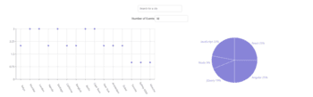

Within this project I was responsible for creating a webpage for my portfolio using HTML and CSS.
See Project on githubI built a serverless, progressive web application (PWA) with React using a test-driven development (TDD) technique. The application uses the Google Calendar API to fetch upcoming events.
Within this project I created a service that generates a pdf out of webpages with the help of node.js sever.
See project on githubHere you can find the styleguide I've created for this portfolio page. It was created with the livingstyleguide gem and grunt.
See project on githubI can help in realizing front-end and back-end projects with the following: React.js, JavaScript, Java, JavaFX, HTML and CSS. I am also happy to learn other technologies if needed.
Contact me